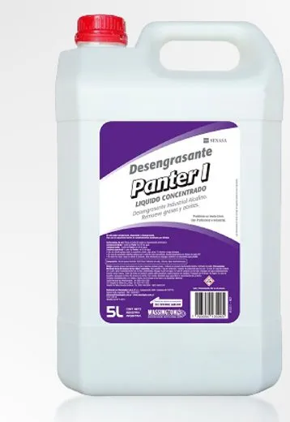

Desengrasante · 5 L
Panter I
Líquido concentrado alcalino que elimina grasas y aceites en áreas de alimentos: utensilios, mesadas, equipos y superficies inertes.
- Para superficies inertes en establecimientos habilitados por SENASA
- Concentrado: rinde más por litro
1:201:401:60
Modo de uso: diluir en agua según el nivel de suciedad (1:20 a 1:60), aplicar y dejar actuar unos 15 minutos. Ver ficha técnica